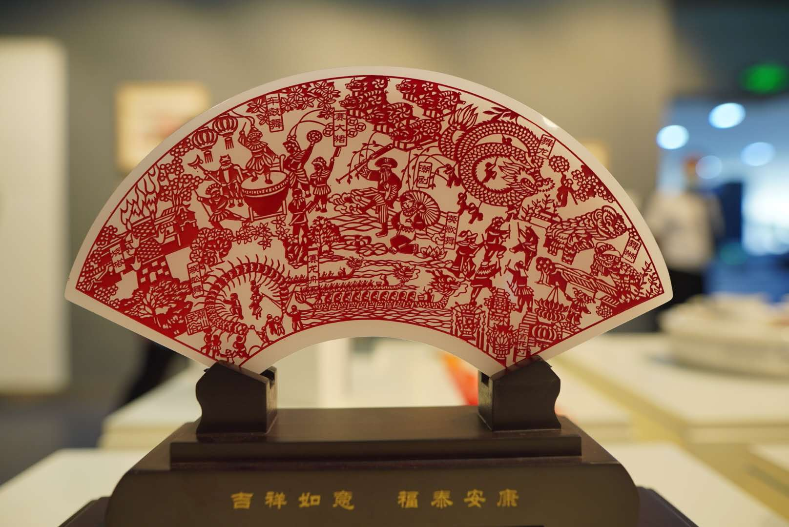
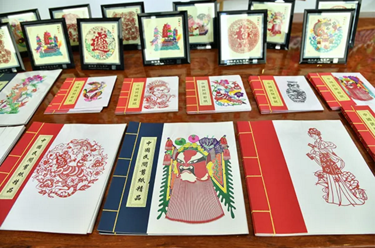

联系人：XXXX
电话：156-0000-0000

先唐 纸的发明是在公元前的西汉时代，在此之前是不可能有剪纸艺术的出现的，但当时人们运用薄片材料，通过镂空雕刻的技法制成工艺品，却早在未出现纸时就已流行，即以雕、镂、剔、刻、剪的技法在金箔、皮革、绢帛，甚至在树叶上剪刻纹样。《史记》中的剪桐封弟记述了西周初期周成王用梧桐叶剪成“圭”赐其弟，封姬虞到唐为侯。战国时期就有用皮革镂花，（湖北江凌望山一号楚墓出土文物之一），银箔镂空刻花（河南辉县固围村战国遗址出土文物之一），都与剪纸同出一辙，他们的出现都为民间剪纸的形成奠定了一定的基础。
宋代 南宋时期，已经出现了以剪纸为职业的行业艺人。据宋人周密《武林旧事》中记载，此时杭州的“小经济”多达上百种。其中就专门有“剪镞花样”者，有的善剪“诸家书字”，有的专剪“诸色花样” [10]。 宋代造纸业成熟，纸品名目繁多，为剪纸的普及提供了条件。如成为民间礼品的“礼花”，贴于窗上的“窗花”，或用于灯彩、茶盏的装饰。 [9]宋代民间剪纸的运用范围逐渐扩大，江西吉州窑将剪纸作为陶瓷的花样，通过上釉、烧制使陶瓷更加精美；民间还采用剪纸的形式，用驴、牛、马、羊等动物的皮、雕刻成皮影戏的人物造型；蓝印花布工艺制作的镂花制版是用油纸板雕镂成纹，刮浆印花的花版纹样就是采用剪纸的技法，有阴、阳刻之分，长线要割断，以点分虚实。
明清时期剪纸手工艺术走向成熟，并达到鼎盛时期。民间剪纸手工艺术的运用范围更为广泛， [9]举凡民间灯彩上的花饰，扇面上的纹饰，以及刺绣的花样等等，无一不是利用剪纸作为装饰成再加工的。 [21]而更多的是中国民间常常将剪纸作为装饰家居的饰物，美化居家环境，如门栈、窗花、柜花、喜花，棚顶花等都是用来装饰门窗、房间的剪纸。 [20] 剪纸艺术虽然来自于民间，但到清代已经成为全民性的艺术，就连当时的皇亲国戚也都离不开剪纸。北京故宫的坤宁宫是清代皇帝结婚时的花烛洞房。宫殿前后窗的窗纸都是裱糊在外面的。墙壁用纸裱糊，四角贴有黑色的“囍”字剪纸角花，顶棚中心是黑色的龙凤团花剪纸。宫殿两旁的过道墙壁上也贴有剪纸。从剪纸的纹样、用料、用色来看，与普通农家的顶棚花、墙花相比，除了剪纸图案稍大以外，基本没有差别 [11]。